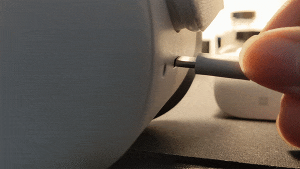
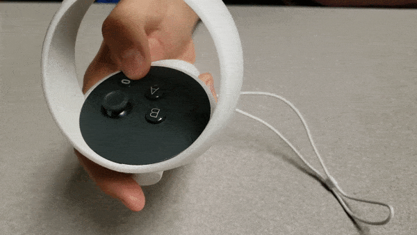
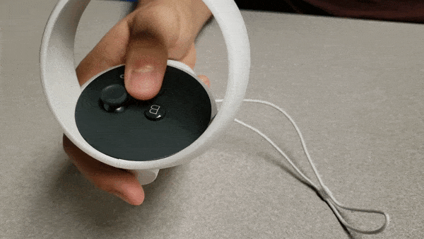
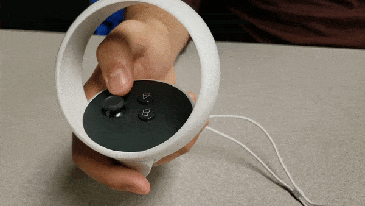

Research Assistant - Recruitment Overview
Before meeting with the patient
- Try to arrive ~15 minutes before the patient is scheduled to come in (e.g. if they are scheduled for 9am, come in at 8:45am)
- Check Slack in case there are any updates from the coordinators
- Head to the Nurse Manager's office
- Sign in using the QR code or the VR Study Sign-In Form
- Grab the Quest headset, controllers, and charger, along with the Android tablet and charger
- Ask the Nurse Manager (Carey) what the status of the patient is (are they receiving the treatment soon, or have they not arrived yet?) and ask her where you can set up your things (typically a room down the hall)
- Set up the headset and tablet, ensuring that: (you will need to wear the headset when setting it up)
- Both are adequately charged (>75% charge for both). If not, plug them in.
- Both are connected to and signed into the same WiFi network (eduroam preferred, but ufguest or ufhealthguest can be used)
- Casting is working -- you should be able to “reset headset view” (calibrate) and “launch apps” from the casting screen.
- If you can see the headset screen but cannot see these options after tapping in the middle of the tablet, this likely means the WiFi is not set up correctly
- If you can’t see the headset screen on the tablet (black screen), ensure that the headset screen is not asleep. If it is not, try opening SuturingVR/YouTube and you should be able to see it then.
- The audio on the headset should be put up to max/near max volume.
- Once set up and tested, the headset and controllers should be sanitized using a non-alcohol sanitizing wipe.
- Wipe everywhere except the lenses of the headset
Meeting with the patient, trying on the headset (pre-procedure)
- When you are given the “go-ahead” from the Nurse Manager (or other medical staff in the clinic), knock on the patient’s door and introduce yourself. Some key points of your introduction:
- Names of all research assistants present
- Your position (student researchers from the University of Florida)
- Why you're there (recruiting patients for a study investigating the efficacy of the emerging technology of virtual reality (“VR”) in reducing pain/anxiety during medical procedures)
- What is virtual reality? Ask them if they’ve used it before -- if they have, they likely know the basics of it. If they haven’t, describe it as an emerging technology where you wear a headset and are “transported into a virtual world” or something along those lines.
- To make the basis of the study (distraction-based therapy) more understandable: “if you’ve ever listened to music or watched TV while you were dealing with some pain or to calm down, VR is just a more immersive version of that. We're trying to see if this more powerful technology has a greater effect in pain or discomfort reduction.”
- Ask the patient if they’d like to try out the VR headset
- If they would, first ask them if they have any of the key disqualification criteria for the study:
- Epilepsy
- Motion sickness
- There is a spectrum for motion sickness, if theirs is mild they can try out VR before to see if they are comfortable with it.
- Other conditions that would prevent them from using VR
- For example, a patient with ALS may not be able to comfortably use the headset when lying face-down, since they would not be able to support their head.
- Explain that use of VR can cause motion sickness, dizziness, and/or nausea. You will be with the patient at all times when they are using VR and can stop the game/take off the headset at any point.
- If they don’t want to use the headset/don’t qualify, they can still participate in the control group.
- Have them sit in a chair/off the side of the bed, and walk through the basic controls listed on the patient page of the SuturingVR website on the tablet.
- Let them get a feel for the Oculus controllers
- Have them choose which hand they want to use (only need to use left OR right hand)
- Show them the basic buttons on the controller that they will use: the trigger and joystick
- Prepare the headset for the patient (ensuring that the app is not already open), and loosening the head strap
- If the patient is using YouTubeVR, set up the video beforehand by opening the app on the headset (while you wear the headset)
- Go to Account -> Watch Later -> Choose between the saved videos.
- If needed, recalibration can be done by looking in a different direction and pressing the trigger button on the controller
- Place the headset on the patient, and tighten slowly (turning the knob at the end of the head strap) until the patient says it is comfortable
- The fit is good when the screen is not blurry, ideally they should be able to read the text on the menus. What is most important is that they are comfortable with the game's graphics
- If they have glasses, depending on the size it may be able to fit in the headset. Otherwise, they may need to try to see if the view is comfortable without glasses
- Ask the patient to hold their head still and calibrate the headset via casting on the tablet
- The menus should now be visible in front of them/on your tablet.
- Open up SuturingVR via the tablet
- Hand the patient the controller, keeping the other controller for yourself to control the game if necessary
- Have the patient hold their head forward and still as they hold the trigger. This is the second calibration phase. If they move/the view is off-center, reset the game
- Let them experience the game and explain the game mechanics, as needed
- After a minute or two, ask them if they are comfortable with the game.
- If they are, take off the headset and ask them to get into the position that the will be for the procedure (e.g. prone for the bone marrow biopsy, with hands supporting their head up)
- Quit/reset the game and put the headset back on the patient
- Ask if this is comfortable and whether they would be fine holding that position for 15-30 minutes (the length of the procedure). If so, they are good good to go!
Informed Consent/Pre-Procedure Survey
- Whether or not the patient is in the VR group, they will sign up for the study by filling out the informed consent.
- This is a 9-10 page document going over the basis of the study, exclusion criteria, potential side effects of VR, consent to get medical records, among some other things.
- Some important points to note:
- If the patient has epilepsy, moderate/severe motion sickness, or other conditions that will prevent them from using VR, they should NOT be in the VR group (can still be in control group)
- If the patient is in the VR group, they may experience side effects like nausea, dizziness, disorientation, or similar effects. If they experience any of these during the procedure, tell the patient to let the assistant know and they will turn off and take off the headset
- The study will have access to the patient’s vitals (in either study group, research and control) from their medical records, for before and after the procedure. This includes heart rate, blood oxygen, blood pressure, etc.
- If the patient wants to read through the informed consent, they are free to do so.
- The patient will print their name on the front page and sign the back page if they consent
- Patients in both groups will complete a pre-procedure survey. Typically, it is easiest to complete this verbally (you will ask them the questions and write down the answers)
- Some data, like the PRN, will be found on the patient’s hospital wristband. This wristband can be used to get the following information:
- The PRN (MRN), used to access medical records in the EPIC database
- Full name + spelling (can be helpful)
- Date-of-birth and age
- For other data, simply ask them the questions if they’re able to answer them.
- Under “Local Anesthetic Used”, this is dependent on the medical professional performing the procedure and is different for every patient. Typically, it is between 15-20 cc (mL), but they may use more or less during the procedure, so you will need to ask the doctor how much they used.
- For survey questions, be sure to indicate how the scales work (0/1 is low or disagree, 5/10 is high or agree)
During the Procedure
- If the patient is in the VR group, you will be in the room with them as they receive the procedure. If they are in the control group, you will generally not be in the room (unless you want to be and, more importantly, they are comfortable with you being there).
- Once the doctor gets the patient in the position for the procedure, set up the headset as before and ensure it is on comfortably.
- Calibrate/start the game, and keep an eye on their progress during the procedure, addressing any issues that may arise.
After the Procedure
- Once the doctor is finished (and you have gotten the local anesthetic numbers from them), take off the headset.
- When the patient is ready, go through the post-procedure survey with them, verbally.
- Thank the patient for participating in the study!
- Patient vitals are collected 30 minutes after the procedure is completed. You can get them directly from the doctor, or from the Nurse Manager anytime afterwards as long as you have the patient MRN.
- Leave a note on the survey if you must leave before getting the vitals
- With the completed pre- and post-procedure surveys, fill out the digitization form via the QR code in the Nurse Manager's office or the VR Study Digitization Form
- Sanitize the headset and controllers, turn off the headset and tablet, and leave them charging in Carey’s office
Interaction Examples

Plugging in the Headset to Charge

Hold to power off, press once to set headset to sleep

Hold to re-center view, press once to bring up Oculus menu

Hold on the non-active controller to reset SuturingVR

Push forward to throw fruit in-game, push harder to throw fruit harder